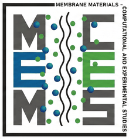
BAŞARIM 2026 · Poster 40 · İTÜ, 14–16 October 2026
From Grand Canonical Monte Carlo
to Graph Neural Networks
An HPC-Driven Screening Framework for MXene-Based CO2/CH4 Separation
- 1 Department of Nanoscience and Nanoengineering, Gebze Technical University, Kocaeli, Türkiye · eyazkan@gtu.edu.tr
- ² Department of Chemical Engineering, Istanbul Technical University, Istanbul, Türkiye · sadiye.velioglu@itu.edu.tr
Abstract
AbstractRemoving CO2 from methane is a key step in natural-gas purification, and adsorption on solid materials is one of the leading ways to do it. Two-dimensional MXenes (Mn+1XnTx) are among the most promising adsorbents: their composition can be tuned in tens of thousands of ways, yet only a handful have ever been measured. This work screens that space end to end on national high-performance computing (HPC) infrastructure, from automated structure generation and distributed high-throughput simulations to machine-learning (ML) surrogates that predict CO2/CH4 adsorption in seconds. A library of 20,592 hypothetical MXenes (six families; eleven transition metals; C or N; twelve surface terminations; two to five metal layers) was generated by one scripted workflow, geometry optimized and assigned DFT-derived charges, and an automated quality check kept 18,884 structures. Grand Canonical Monte Carlo (GCMC) simulations of an equimolar CO2/CH4 mixture at 308 K and 0.1, 1 and 10 bar (UFF/TraPPE force fields, Ewald electrostatics, RASPA 2.0), 56,652 independent runs in total, were distributed over TÜBİTAK ULAKBİM TRUBA accounts and laboratory workstations by MEM-CES Studio, an in-house workflow manager that prepares, submits, monitors and harvests every job. Six uptakes and fifteen derived metrics, including selectivity, working capacity, regenerability, and the adsorbent performance score (APS) for pressure- and vacuum-swing adsorption, were obtained for each structure. Across all families, more metal layers raise selectivity and lower capacity; –S, –Se, –Te, and –I terminations recur among the best performers; and at regenerabilities above 90 % the top MXenes reach APS values of 20–38.5 mol/kg, matching or exceeding the best of 3,816 MOFs screened in the literature. To stand in for further simulations, MX-Identifier, a rule-based fingerprint engine, reads each CIF, labels every atom as metal, X or surface group, builds the bond network and outputs a 97-descriptor fingerprint and a crystal graph. Four surrogates, Random Forest, XGBoost, LightGBM, and a crystal graph convolutional neural network (CGCNN), share one two-stage hybrid scheme: a classifier first separates adsorbers from non-adsorbers, then a regressor trained on adsorbers only predicts the six uptakes. With 15,298 structures for training, 1,700 for testing and a held-out test set of 1,886 never seen by any model, the CGCNN reached 99.79 % classification accuracy and R² = 0.972–0.990 for the six uptakes on the held-out set. The deployed screening interface analyzes a structure at all three pressures in 1.18 s on a CPU, an estimated 37,000× faster than a single GCMC simulation. The HPC effort invested once is thus amortized through learned surrogates, and the resulting ecosystem (automated structure generation, distributed GCMC, crystal-aware fingerprinting, and hybrid ML) can be extended to other crystals and gas pairs.
- high-performance computing
- high-throughput computational screening
- Grand Canonical Monte Carlo
- MXene
- adsorption-based CO2/CH4 separation
- graph neural networks
- surrogate models
Source: BAŞARIM 2026 abstract, one-page version of 9 October 2026 (the poster's numbers), reported.
Motivation & Objective
Removing CO2 from methane is a key step in natural-gas purification, and adsorption on solid materials is one of the leading ways to do it. MXenes, two-dimensional materials with tens of thousands of possible compositions, are among the most promising adsorbents, yet only a handful have ever been measured. We screen this space end to end: automated structure generation, distributed GCMC simulations and machine-learning surrogates that predict adsorption in seconds.
New in this work: MX-Identifier, a rule-based fingerprint engine; one automated, distributed GCMC campaign over 18,884 MXenes; a classify-then-regress hybrid surrogate.
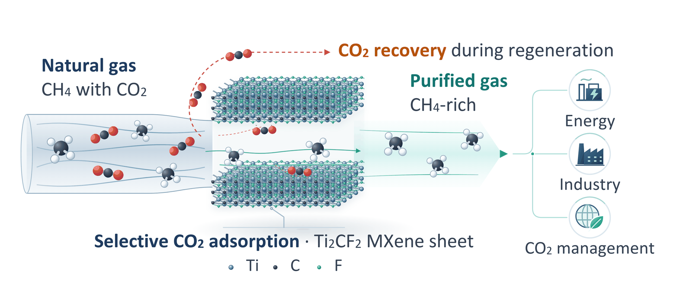
Read more from the thesis
MXenes are a family of two-dimensional early-transition-metal carbides and nitrides, named for their M–X bonding and their "-ene" sheet morphology (thesis p. 5). The screening space combines eleven metals, two core elements and twelve surface terminations (thesis p. 14, Table 2.1). Natural gas is typically treated by pressure- or vacuum-swing adsorption, and the adsorbent dominates the process economics (thesis p. 4). The central challenge is that the composition space is far too large to explore experimentally, which motivates a computational screen (thesis p. 4).
Numbers in this section
18,884 MXenes screened reported · thesis p. 16.
Hypothetical MXene Library
- M: Sc, Ti, V, Cr, Y, Zr, Nb, Mo, Hf, Ta, W
- X: C or N
- Tx: bare, –H, –O, –OH, –F, –Cl, –Br, –I, –S, –Se, –Te, –NH2
- Layers: n = 2–5, P63/mmc templates
Ti2CO2, a single-metal entry (n = 2)
| Family | n = 2 | n = 3 | n = 4 | n = 5 | Total |
|---|---|---|---|---|---|
| SS · single TM | 264 | 264 | 264 | 264 | 1,056 |
| OPDT · out-of-plane double TM | 2,640 | 2,640 | – | – | 5,280 |
| IPDT · in-plane double TM | 2,640 | – | – | – | 2,640 |
| IPV · in-plane vacancy | 264 | – | – | – | 264 |
| SSM · solid solution, M site | 2,640 | 2,640 | 2,640 | 2,640 | 10,560 |
| SSX · solid solution, X site | 264 | 264 | 264 | – | 792 |
| Total generated | 20,592 |
Columns: metal layers per template (n = 2 → M2XTx … n = 5 → M5X4Tx); each template runs over 11 M × 2 X × 12 Tx = 264 chemistries.[1]
Mn+1XnTx
Unit cells a × b × c
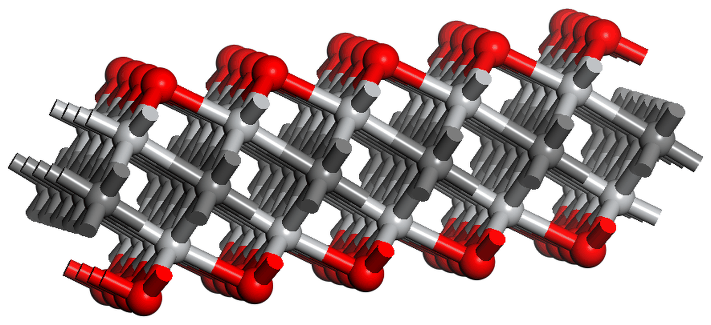
TiCO
Drag to rotate, pinch or scroll to zoom. Choose a × b × c to repeat the unit cell.
More analyses2 figures
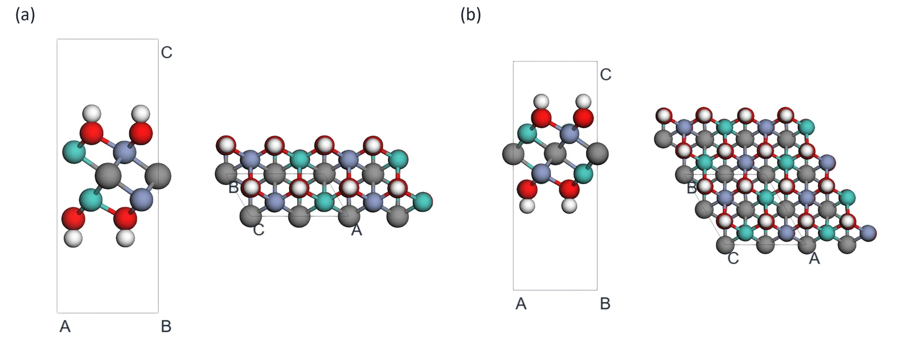
From the thesis text
The groups in which two different metal types are distributed over the same metal layer of 2- and 3-layer MXene structures ((M’yM’’1-y)2XTx and (M’yM’’1-y)3X2Tx), named “solid solution on M site”, were generated under the abbreviations SSM2 and SSM3. For the case in which the two metal concentrations are equal (y = 0.5), two distinct configurations were defined; as exemplified for the (Cr0.5W0.5)2C(OH)2 structure in Figure 2.1, these were produced in the 2×1 and 2×2 forms.
thesis p. 15
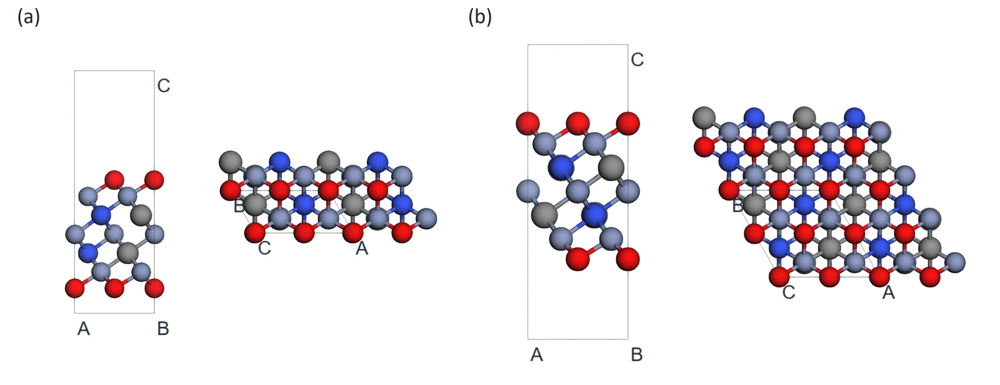
From the thesis text
Finally, the groups that contain a single metal type but in which carbon (C) and nitrogen (N) are arranged within the same X layer at a given concentration in 2- and 3-layer structures (M2(CyN1-y)Tx and M3(CyN1-y)2Tx) were named “solid solution on X site” and abbreviated as SSX2 and SSX3. For the 3-layer structures with equal C/N concentration (y = 0.5), two distinct configurations were again defined and produced in the 2×1 and 2×2 forms, as exemplified for the Cr3(C0.5N0.5)2O2 structure in Figure 2.2.
thesis p. 15
Read more from the thesis
The library was generated from six MXene families reported in the literature using a Ti2CF2 unit cell as reference (thesis p. 14). Every template runs over 11 early transition metals (Ti, Ta, V, Y, Nb, Zr, Cr, Sc, W, Hf, Mo), two core elements (C, N) and twelve surface groups (thesis p. 14). A Perl workflow inside Materials Studio varied metal, C/N element and functional group in nested loops (thesis p. 16). 20,592 raw structures passed through a quality-control procedure that rejected structures whose terminations collapsed into the metal plane (1,042), whose cell angles deviated by more than ±3° after optimization (402), or whose simulation outputs were incomplete (264): 1,708 removed, 18,884 kept (thesis p. 16). The family distribution is given in thesis Table 2.1 (thesis p. 14).
Numbers in this section
- 20,592 generated reported · thesis p. 14
- 18,884 kept reported · thesis p. 16
- 1,708 removed reported · thesis p. 16
- 264 chemistries per template derived · 11 × 2 × 12.
Structure Generation and Validation
One scripted workflow sweeps every M, X and Tx over each family template, then relaxes, assigns charges and exports every structure.
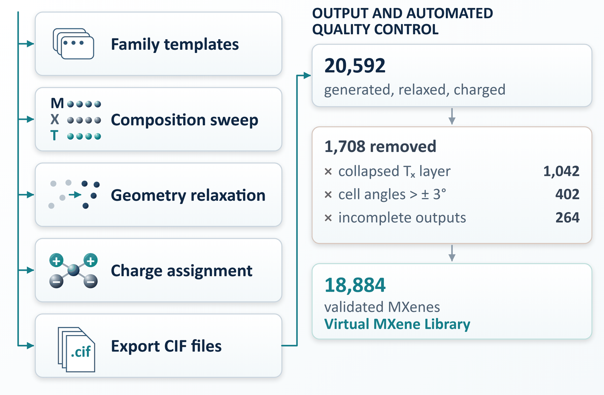
Hands-on structure preparation: ≈ 10 min per CIF by hand → 0
≈ 3,400 h of hands-on work in total (est.)
More analyses2 figures
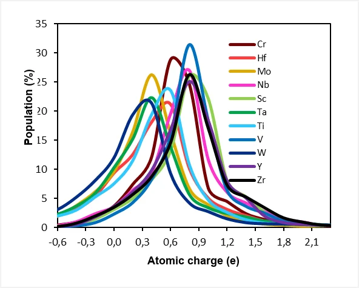
From the thesis text
As a result, structure generation, lattice equilibration and atomic-charge assignment were automated for every MXene structure within a single script. With this Perl workflow, the MXene structures were prepared in a manner that is both controlled and fast, and the assigned atomic charges were verified as the final step. The charge of every atom in every prepared structure is listed in the appendix to this thesis. The charge distribution of each metal atom, computed over the 18,884 successfully prepared structures, is shown in Figure 2.3a. The broad charge distribution observed for each metal in the plot is itself an indicator of the structural flexibility of MXenes.
thesis p. 18
… The shift of metals such as W and Mo towards the lower-charge region (around 0.3–0.6 e) suggests that their bonds with the X atoms (C or N) possess a more covalent character; conversely, the shift of the peaks of Zr, Y and Sc towards +0.9 e and beyond indicates a more ionic bonding character in which the metal surrenders its electrons more readily. Consistent with the oxidation states shown in Figure 2.3b, the W (OS: -4), Mo (-4), Ta (-3), Hf (-2) and Ti (-2) metals acquired negative charges in 5–10% of the structures. The broadening of the distribution in the positive region, in particular the shoulders above +1.2 e, can be attributed to the strongly electronegative -F2 and -O2 surface groups withdrawing substantial electron density from the metal atoms. …
thesis p. 18
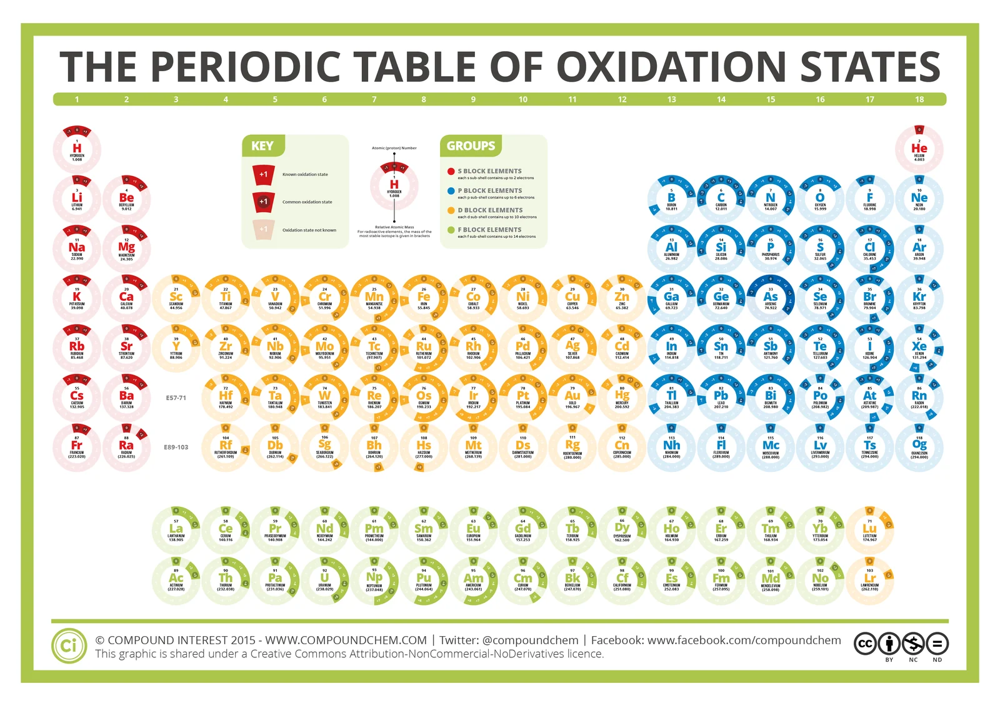
From the thesis text
As a result, structure generation, lattice equilibration and atomic-charge assignment were automated for every MXene structure within a single script. With this Perl workflow, the MXene structures were prepared in a manner that is both controlled and fast, and the assigned atomic charges were verified as the final step. The charge of every atom in every prepared structure is listed in the appendix to this thesis. The charge distribution of each metal atom, computed over the 18,884 successfully prepared structures, is shown in Figure 2.3a. The broad charge distribution observed for each metal in the plot is itself an indicator of the structural flexibility of MXenes.
thesis p. 18
… The shift of metals such as W and Mo towards the lower-charge region (around 0.3–0.6 e) suggests that their bonds with the X atoms (C or N) possess a more covalent character; conversely, the shift of the peaks of Zr, Y and Sc towards +0.9 e and beyond indicates a more ionic bonding character in which the metal surrenders its electrons more readily. Consistent with the oxidation states shown in Figure 2.3b, the W (OS: -4), Mo (-4), Ta (-3), Hf (-2) and Ti (-2) metals acquired negative charges in 5–10% of the structures. The broadening of the distribution in the positive region, in particular the shoulders above +1.2 e, can be attributed to the strongly electronegative -F2 and -O2 surface groups withdrawing substantial electron density from the metal atoms. …
thesis p. 18
Read more from the thesis
Structure generation, lattice equilibration (Forcite, UFF) and atomic-charge assignment (DMol3 ESP; settings as in thesis Table 2.3) were automated in a single Perl workflow (thesis p. 16, p. 18).
Numbers in this section
- ≈ 10 min per CIF by hand → 0 estimate · author
- ≈ 3,400 h of hands-on work in total (derived from estimate: 20,592 structures × 10 min each).
GCMC Protocol & Performance Metrics
SIMULATION SET-UP
- System: rigid two-layer supercell, channel aperture ≈ 4.5 Å (lamellar Ti3C2Tx-like)
- Mixture: equimolar CO2/CH4, 308 K, 0.1 / 1 / 10 bar
- Force field: UFF + TraPPE, DFT-ESP charges, Ewald, 13.5 Å cut-off, RASPA 2.0[2–4]
6 UPTAKES + 15 DERIVED METRICS
PSA: Pressure Swing Adsorption · VSA: Vacuum Swing Adsorption
Read more from the thesis
Adsorption was computed with RASPA 2.0 using the UFF force field for the MXene framework and TraPPE for the gases (thesis p. 22). The CO2 model follows a TraPPE-like three-site rigid model (thesis p. 22). Every structure was simulated at three pressures, giving three CO2 and three CH4 uptakes, from which fifteen derived process metrics (selectivity, working capacity, regenerability, APS, AFM, SSP) are computed (thesis p. 36). Protocol validation: simulated CO2 isotherms for Ti3C2Tx and Mo2CTx lie inside the experimental range (poster Section 6; thesis p. 59).
Numbers in this section
- 56,652 runs derived · 18,884 × 3 pressures; thesis p. 22
- 3 pressures 0.1/1/10 bar
- 308 K
- 6 uptakes + 15 derived metrics (thesis p. 36).
This interactive illustration needs JavaScript.
HPC Workflow Management: MEM-CES Studio
MEM-CES Studio runs the whole campaign from one application: it prepares the inputs, uploads and submits the jobs, monitors them, then downloads and parses the outputs and stores the structured results. Autopilot watches the pooled TRUBA accounts and the lab workstations and launches the next batch as soon as capacity becomes available.
![MEM-CES Studio 3.0, one app as the controller: 1 prepare inputs, 2 dispatch jobs, 3 monitor status, 4 harvest and analyse, repeated; a structure library, a job registry and a results store with an SQLite registry, one status board for every backend and Excel export. Jobs go over VPN and SSH to the TÜBİTAK ULAKBİM TRUBA student and project accounts (SLURM, 56-core nodes, one square = one GCMC run) and over the LAN to the MEM-CES simulation lab, whose multi-core workstations act as extra workers; results come back the same way.](assets/sec5_studio.png)
Simulation handling: ≈ 15 min per structure by hand → ≈ 4,721 h avoided (est.)
Autopilot: monitor · collect · relaunch
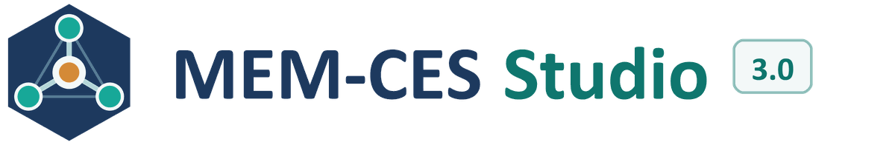
Read more from the thesis
The controller is the second automation layer of the ecosystem; it runs every structure to all three pressures (poster Section 5). The distributed pool spans pooled TRUBA accounts — student accounts at 2 × 56 cores each and a project account at 4 × 56 cores — and the laboratory workstations. The thesis gives the campaign cost as an estimate, not a metered total: 12–18 core-hours per structure (thesis p. 86).
Numbers in this section
- ≈ 15 min of simulation handling per structure by hand estimate · author
- ≈ 4,721 h avoided (derived from estimate: 18,884 × 15 min)
- 12–18 core-hours per structure estimate · thesis p. 86.
GCMC Screening Results
- General trend: more metal layers raise selectivity and lower capacity.
- Surface chemistry: –S, –Se, –Te and –I terminations recur among the best-performing MXenes.
- Capacity champions: thin SS2 and SSM2 reach a PSA working capacity of 2.0–2.5 mol/kg.
- Best balance: SSM3 and SSX3 combine selectivities approaching 100 with a useful working capacity.
- Comparison with MOFs[5]: at R > 90 %, top MXenes reach APS 20–38.5 mol/kg, the best of 3,816 MOFs (literature protocol) ≈ 20–30.
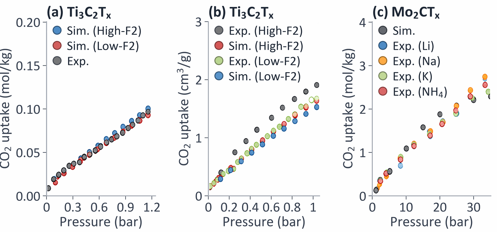
More analyses14 figures
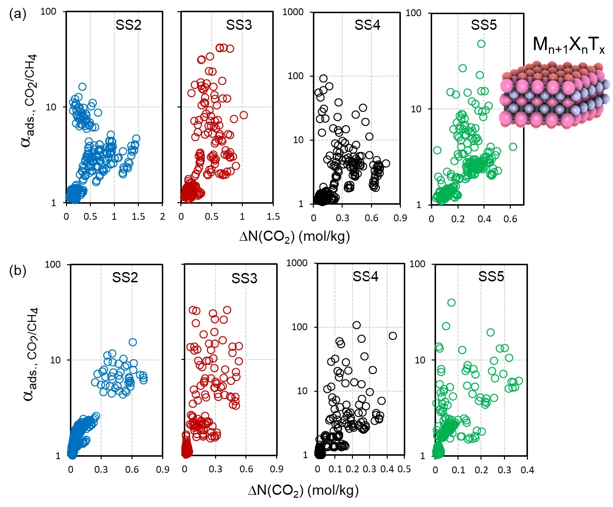
From the thesis text
For the SS group, Figure 4.1 shows that selectivity and working capacity cluster in a narrow region, since this family contains only a single transition-metal species; as the number of metal layers increases, both selectivity and ∆NCO2 systematically rise, but the highest values are limited to a few surface terminations (–O2, –F2).
thesis p. 41
… This homogeneous energy profile indicates that the IPDT and IPV structures engage in a well-balanced and stable, yet not overly aggressive, physical interaction with CO2. This is consistent with the fact that the MXene structures in these groups possess the highest values in the CO2 working-capacity plots presented in Figures 4.1–4.5. In addition to their main peaks, the structures in the SS and OPDT groups contain broad shoulders extending towards the −25 to −35 kJ/mol band. …
thesis p. 48
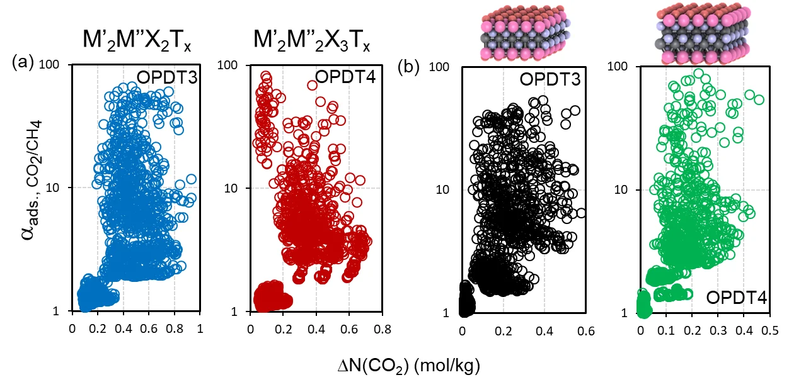
From the thesis text
Of the 5,280 possible OPDT structures, 5,080 were generated without error and 4,114 satisfied the adsorption criteria S(CH4)>0.01 mol/kg and #(CH4)>1; compared with SS, the ordered arrangement of two distinct transition metals introduces a surface heterogeneity that broadens the data clouds and widens the accessible selectivity range (Figure 4.2).
thesis p. 42
… This homogeneous energy profile indicates that the IPDT and IPV structures engage in a well-balanced and stable, yet not overly aggressive, physical interaction with CO2. This is consistent with the fact that the MXene structures in these groups possess the highest values in the CO2 working-capacity plots presented in Figures 4.1–4.5. In addition to their main peaks, the structures in the SS and OPDT groups contain broad shoulders extending towards the −25 to −35 kJ/mol band. …
thesis p. 48
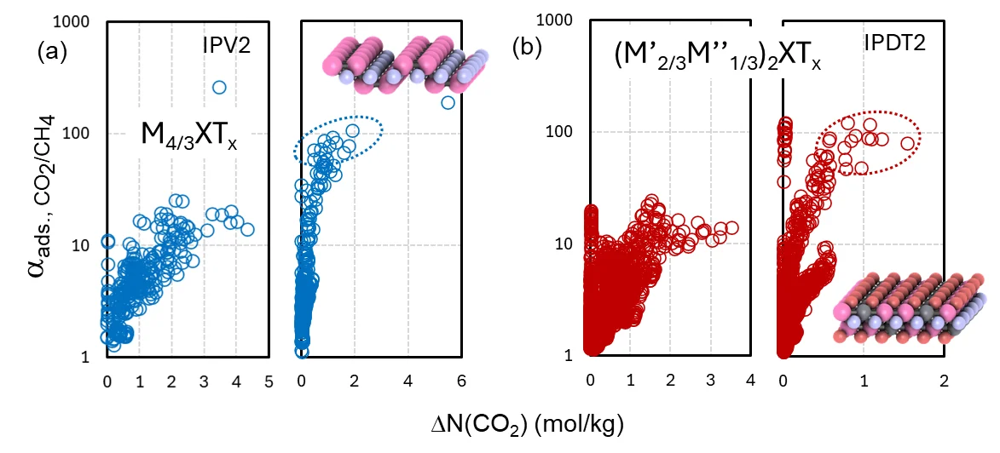
From the thesis text
Considering all groups examined so far, the IPV2 group delivers the highest performance under both processes: for PSA a working capacity of 3.4 mol/kg and a selectivity of 262 are obtained for Mo1.33C, while for VSA the same Mo1.33C structure attains 5.5 mol/kg and a selectivity of 191. Although IPDT2 is constructed by replacing the IPV2 vacancy with a second metal species, the additional surface metal partially hinders gas access; the resulting increase in surface entropy nevertheless keeps performance above the SS level (Figure 4.3b).
thesis p. 43
… This homogeneous energy profile indicates that the IPDT and IPV structures engage in a well-balanced and stable, yet not overly aggressive, physical interaction with CO2. This is consistent with the fact that the MXene structures in these groups possess the highest values in the CO2 working-capacity plots presented in Figures 4.1–4.5. In addition to their main peaks, the structures in the SS and OPDT groups contain broad shoulders extending towards the −25 to −35 kJ/mol band. …
thesis p. 48
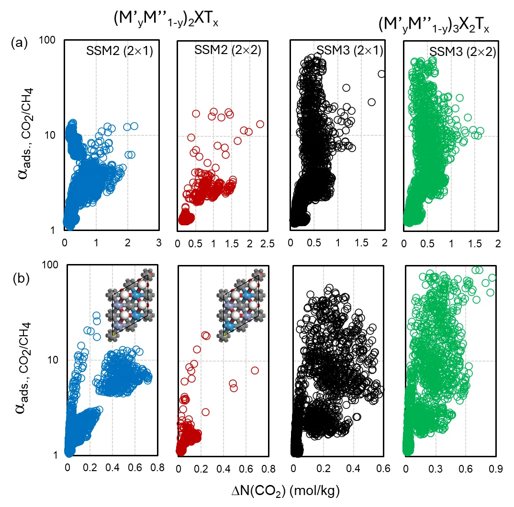
From the thesis text
In the SSM group, 10,016 out of 10,560 possible structures were generated without error and 6,957 of these satisfied the adsorption criteria S(CH4)>0.01 mol/kg and #(CH4)>1; for a metal-layer concentration of y=0.5, two distinct configurations (2×1 and 2×2) were studied for both the two- and three-layer structures, and as Figure 4.4 shows the solid-solution approach broadens the selectivity-working-capacity plane appreciably relative to the SS group. In the SSX group, by contrast, the core C/N concentration rather than the metal layer was set to y=0.5; the effect of the two configurations (2×1 and 2×2) defined only for the three-layer SSX structures and of the layer count is examined in Figure 4.5, where the X-site solid solution preserves a selectivity similar to the SS structures of equal layer count while markedly increasing the working capacity.
thesis p. 44
Several further observations follow from Figures 4.4 and 4.5. In the SSM group, increasing the metal-layer count raises the CO2/CH4 selectivity appreciably, as seen even more clearly in the SS group, while slightly reducing the CO2 working capacity, and the 2×1 and 2×2 configurations differ only marginally in either quantity under both processes; PSA widens the capacity limits, whereas VSA compresses the working capacity of all sub-groups sharply into the 0.6-0.9 mol/kg band. …
thesis p. 45
… This homogeneous energy profile indicates that the IPDT and IPV structures engage in a well-balanced and stable, yet not overly aggressive, physical interaction with CO2. This is consistent with the fact that the MXene structures in these groups possess the highest values in the CO2 working-capacity plots presented in Figures 4.1–4.5. In addition to their main peaks, the structures in the SS and OPDT groups contain broad shoulders extending towards the −25 to −35 kJ/mol band. …
thesis p. 48
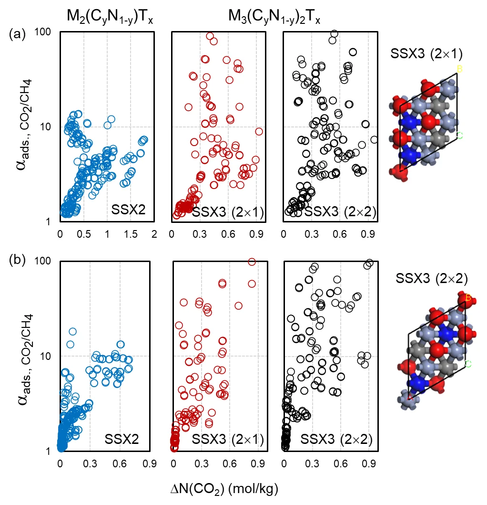
From the thesis text
In the SSM group, 10,016 out of 10,560 possible structures were generated without error and 6,957 of these satisfied the adsorption criteria S(CH4)>0.01 mol/kg and #(CH4)>1; for a metal-layer concentration of y=0.5, two distinct configurations (2×1 and 2×2) were studied for both the two- and three-layer structures, and as Figure 4.4 shows the solid-solution approach broadens the selectivity-working-capacity plane appreciably relative to the SS group. In the SSX group, by contrast, the core C/N concentration rather than the metal layer was set to y=0.5; the effect of the two configurations (2×1 and 2×2) defined only for the three-layer SSX structures and of the layer count is examined in Figure 4.5, where the X-site solid solution preserves a selectivity similar to the SS structures of equal layer count while markedly increasing the working capacity.
thesis p. 44
Several further observations follow from Figures 4.4 and 4.5. In the SSM group, increasing the metal-layer count raises the CO2/CH4 selectivity appreciably, as seen even more clearly in the SS group, while slightly reducing the CO2 working capacity, and the 2×1 and 2×2 configurations differ only marginally in either quantity under both processes; PSA widens the capacity limits, whereas VSA compresses the working capacity of all sub-groups sharply into the 0.6-0.9 mol/kg band. …
thesis p. 45
… This homogeneous energy profile indicates that the IPDT and IPV structures engage in a well-balanced and stable, yet not overly aggressive, physical interaction with CO2. This is consistent with the fact that the MXene structures in these groups possess the highest values in the CO2 working-capacity plots presented in Figures 4.1–4.5. In addition to their main peaks, the structures in the SS and OPDT groups contain broad shoulders extending towards the −25 to −35 kJ/mol band. …
thesis p. 48
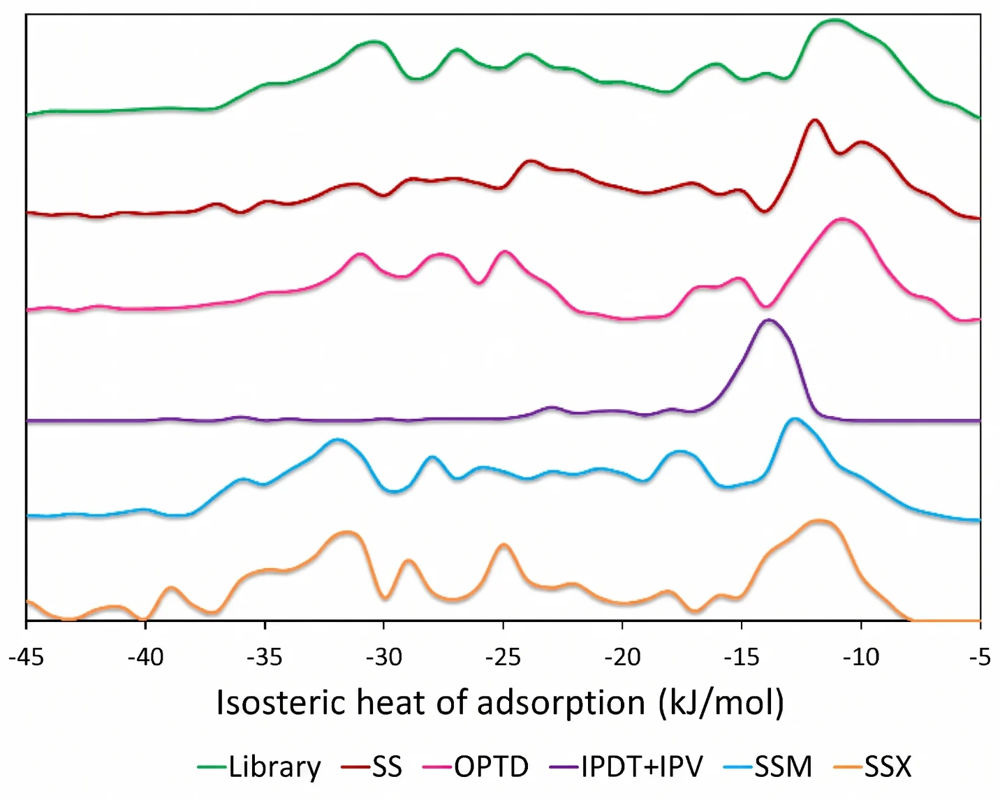
From the thesis text
Following the analysis of CO2 working capacity versus adsorption selectivity, Figure 4.6 presents the isosteric heat of adsorption (Qst) distribution profiles at 10 bar for the full library of approximately 20,000 MXene structures screened within this project, together with those of the defined sub-groups (SS, OPDT, IPDT+IPV, SSM, and SSX).
thesis p. 47
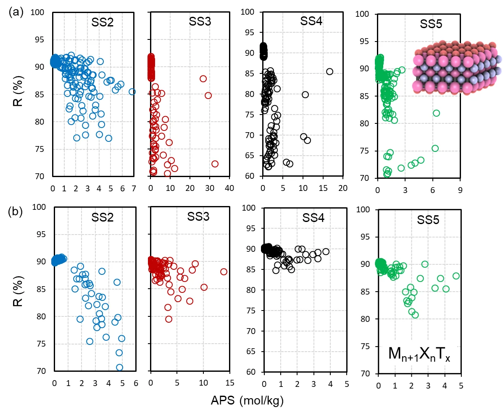
From the thesis text
For the SS group under both PSA and VSA (see Figure 4.8), the highest R(%) values are obtained for SS2, SS3, SS4 and SS5 at 92.22%, 91.93%, 91.87% and 92.18%, respectively; a pronounced R(%)–APS trade-off is observed for all SS sub-groups and SS3 clearly outperforms the others on the APS axis, reaching ~35–40 mol/kg (PSA) and ~15 mol/kg (VSA).
thesis p. 52
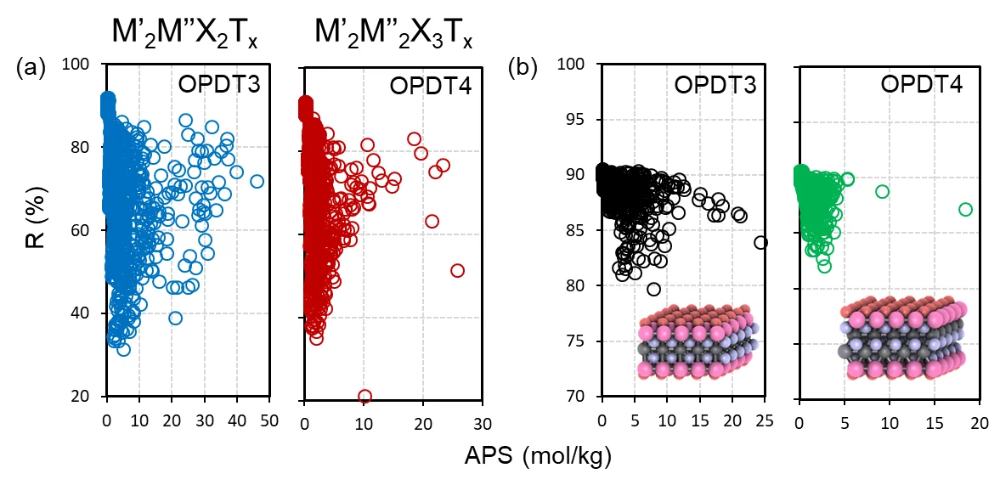
From the thesis text
For the OPDT group, the APS-R(%) relationship is compared under PSA and VSA conditions in Figure 4.9; the highest R(%) values are obtained for OPDT3 and OPDT4 at 91.96% and 90.56% under PSA and 91.87% and 90.61% under VSA. The OPDT performance shows a pronounced scatter under PSA, whereas the distribution is more compact under VSA. Comparing the SS and OPDT groups, the single-metal SS data points cluster in narrow regions while the data clouds of the OPDT group, formed by the ordered arrangement of two distinct metals, are more dispersed; this dual-metal combination diversifies the surface chemistry and the interlayer interactions and thereby widens the accessible chemical space.
thesis p. 53
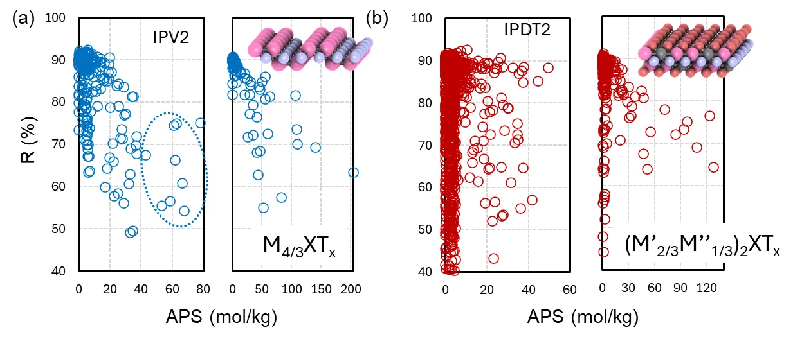
From the thesis text
For IPV2 (see Figure 4.10), structures satisfying R(%)>90 constitute 30% of the population under PSA and 55% under VSA; the IPV group reaches the most extreme APS values among all MXene groups, with APS climbing to 1,040 mol/kg for Mo1.33C under VSA. For IPDT2, the share of structures with R(%)>90 reaches 41% under PSA and 73% under VSA; IPDT2 shows a steep vertical scatter on the R(%) axis (down to 40%) while sampling a wide chemical space on the APS axis (from 0–10 mol/kg up to several hundred mol/kg).
thesis p. 54
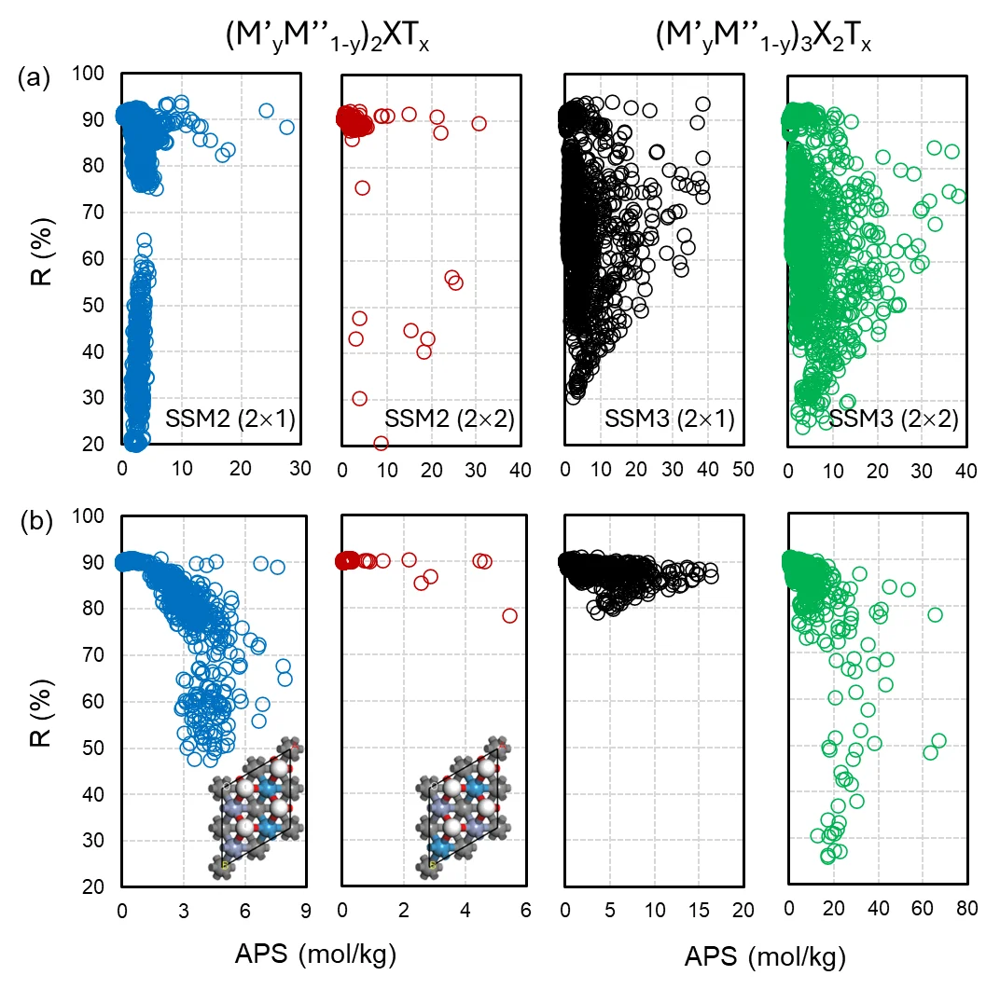
From the thesis text
For the SSM group, the APS-R(%) relationship is shown in Figure 4.11; APS rises as the number of metal layers increases, but the change in metal configuration produces no marked difference. Higher APS values are reached under PSA than under VSA, accompanied by a large population of structures concentrated in the low-R(%) region.
thesis p. 55
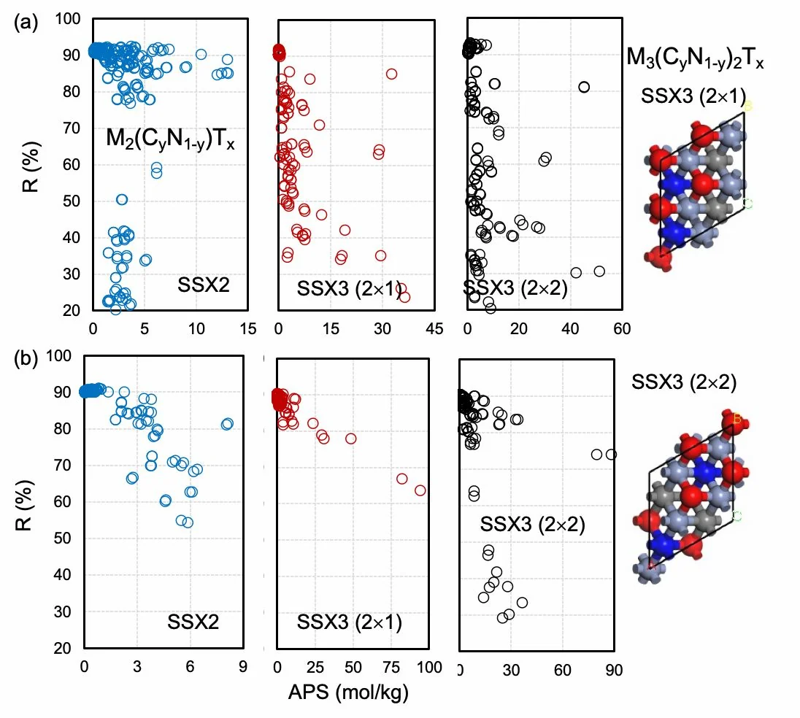
From the thesis text
The same relationship for the SSX group is shown in Figure 4.12; while the SS and SSX groups of equal metal-layer count are very similar in terms of R(%) performance, the SSX group exhibits substantial increases in APS. This indicates that, when a simultaneous increase in selectivity and CO2 working capacity is sought, the X-site solid-solution strategy is a powerful design lever.
thesis p. 55
The SSX group also overturns a pattern observed everywhere else. In all groups analyzed so far, PSA delivered far higher APS values than VSA; in the SSX3 structures this situation is completely reversed, and the comparison of the PSA and VSA results for the two SSX3 configurations makes the gap strikingly clear in Figure 4.12. This proves that the C/N modification of the X site (y = 0.5) provides a unique thermodynamic and electronic advantage for CO2 adsorption under VSA that is seen in no other group. …
thesis p. 56
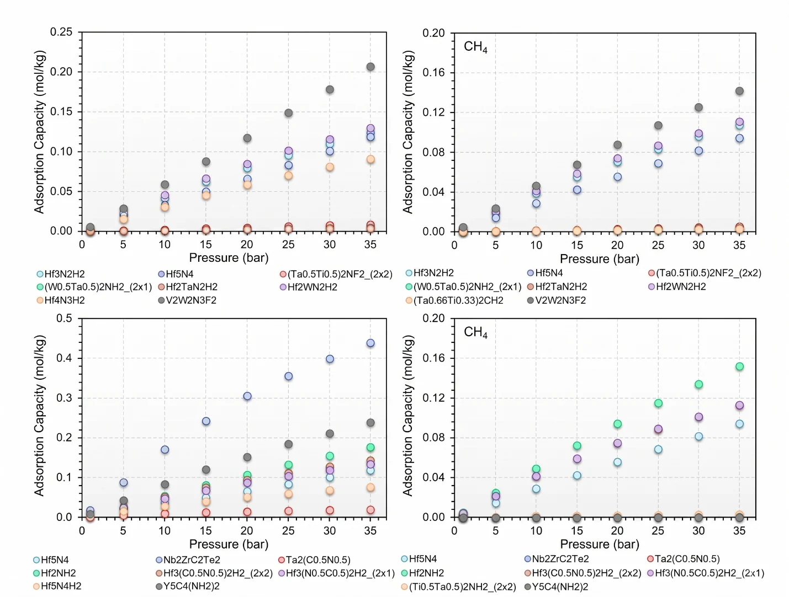
From the thesis text
A similar analysis based on adsorption isotherms was also carried out for representative MXene structures selected from the high-throughput computational screening library examined in Section 4.3. The CO2 and CH4 adsorption isotherms at 35 °C for the selected MXene structures (see Figure 4.15 and Figure 4.16) reveal how strongly the chemical composition of the MXene materials governs the process performance. In selecting this set, which comprised 40 structures for PSA and 40 structures for VSA in total, great care was taken to ensure a homogeneous representation of the six different sub-groups defined in this project (SS, OPDT, IPDT, IPV, SSM and SSX). …
thesis p. 59
… (Cr0.5Y0.5)2CF2) groups; the same trend is observed in the adsorption isotherms in Figure 4.15. When the isotherms of the 20 least promising structures for the PSA and VSA processes are examined (Figure 4.16), the adsorption capacities are seen to be confined to at most 0.1–0.2 mol/kg. The fundamental reason for this is that the metal type and/or surface functional groups of these MXene variants exhibit no affinity towards the gas molecules. …
thesis p. 60
Owing to this strong interaction, the active sites fill rapidly even at low pressures, while at high pressures the channel loses its dilute internal character and approaches the saturation phase in accordance with steric constraints. In the structures with a low CO2 adsorption capacity (Figure 4.16), by contrast, the isotherms obey Henry’s law along a completely linear curve, without bending, even at pressures as high as 35 bar.
thesis p. 60
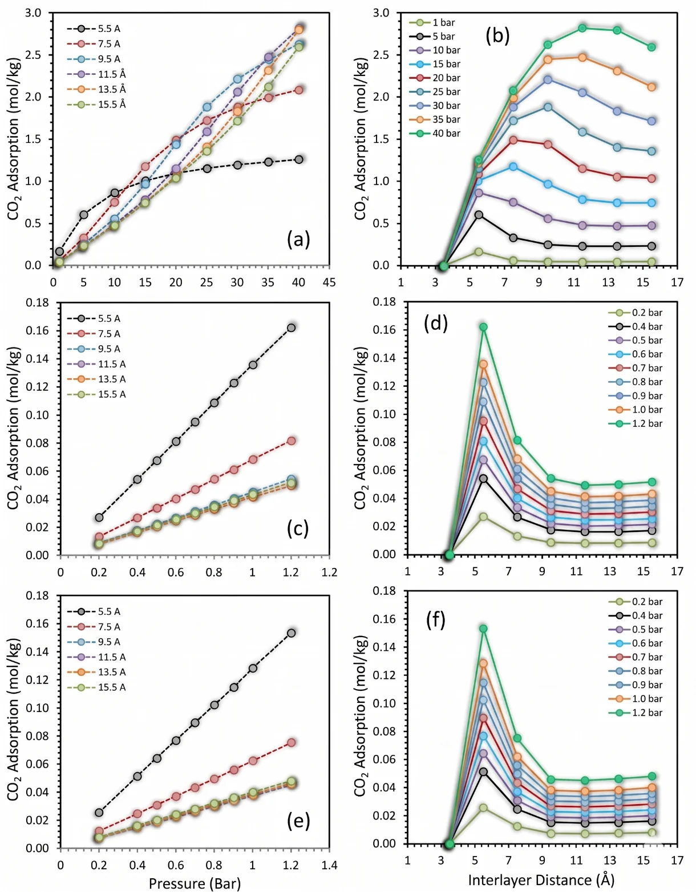
From the thesis text
Furthermore, in order to elucidate the effect of the interlayer spacing (d-spacing) and the micropore confinement on the adsorption mechanism in MXene structures, analyses were carried out on MXenes selected from the structures prepared for comparison with the experimental data, in which the interlayer spacing was varied from 5.5 Å to 15.5 Å and the pressure was raised up to 40 bar. Our simulation results for the Ti3C2(O0.5F0.5)2, Ti3C2O1.24F0.76 and Mo2CO1.55F0.11Cl0.33 MXene structures, presented in Figure 4.17, show that, contrary to common macroscopic expectations, multilayer adsorption does not become dominant and delay saturation as the spacing widens; on the contrary, the narrow pores reach saturation much earlier. For example, in the case of the Mo2CO1.55F0.11Cl0.33 MXene structure, whose adsorption was examined at high pressures, the narrow channel openings of 5.5 Å and 7.5 Å give rise to an overlap of the attractive fields of the two walls (overlapping potential) when the CO2 molecules enter the pore. This narrow volume of high potential energy fills rapidly even at low pressures and, owing to steric constraints, reaches saturation at an early stage, exhibiting typical Langmuir behavior (see Figure 4.17(a)). At the wider channel openings of 9.5 Å to 15.5 Å, however, the attractive potential at the center of the pore weakens as the inter-wall distance increases. …
thesis p. 62
In each constant-pressure curve given in Figure 4.17(b), the fact that the adsorption capacity reaches a maximum in the 5.5–7.5 Å range at low pressures and in the 9.5– 11.5 Å range at high pressures, as the interlayer spacing increases, confirms the confinement mechanism mentioned above. While narrow pores are advantageous at low pressures owing to the overlap of the dual-wall potential, as the pressure increases the pressure-driven packing imposed by the bulk phase comes into play; as the narrow pores reach saturation because of their volumetric limits, the larger spacings that offer a greater volume attain higher capacities and shift the peak to the right (towards wider interlayer spacing). …
thesis p. 63
Moreover, these results (Figure 4.17) are in excellent agreement with the “Pore Confinement Effect” theory defined in the literature for nanoporous materials [194, 195] and prove that it is also valid for MXene nanomaterials. In order to support this thermodynamic behavior visually at the molecular level, the 10 bar and 30 bar conditions were selected from Figure 4.17(b) to represent the low- and high-pressure regimes, and the cross-sectional snapshots taken from the MXene channels under these conditions, together with the arrangement morphology of the CO2 molecules between the layers, are presented in Figure 4.18. Under low pressure (10 bar) and at the narrow interlayer spacing of 5.5 Å, the confinement effect is observed clearly in crystallographic terms. …
thesis p. 63
In addition, the adsorption behavior in the low-pressure regime (0.2–1.2 bar) was examined in detail for the Ti3C2(O0.5F0.5)2 and Ti3C2O1.24F0.76 MXene structures (different functional-group concentrations) (Figure 4.17(c–f)). When the system is tested at low pressures around 1 bar, it exhibits a perfectly linear (Henry’s law) character at all interlayer spacings. …
thesis p. 65
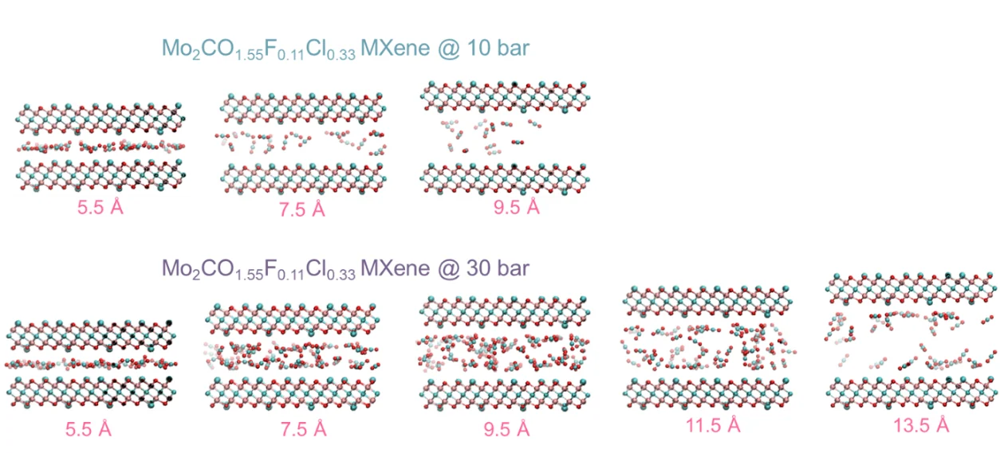
From the thesis text
Moreover, these results (Figure 4.17) are in excellent agreement with the “Pore Confinement Effect” theory defined in the literature for nanoporous materials [194, 195] and prove that it is also valid for MXene nanomaterials. In order to support this thermodynamic behavior visually at the molecular level, the 10 bar and 30 bar conditions were selected from Figure 4.17(b) to represent the low- and high-pressure regimes, and the cross-sectional snapshots taken from the MXene channels under these conditions, together with the arrangement morphology of the CO2 molecules between the layers, are presented in Figure 4.18. Under low pressure (10 bar) and at the narrow interlayer spacing of 5.5 Å, the confinement effect is observed clearly in crystallographic terms. …
thesis p. 63
Read more from the thesis
The record holder is vacancy-ordered Mo1.33C with ΔN(CO2) = 3.4 mol/kg and selectivity S = 262 (PSA) (thesis p. 43), at R = 36 %, which is why it sits outside the R > 90 % comparison (derived from thesis Appendix Table 2 uptakes). At 35 bar the four leaders of the top-20 lists reach 4.57–4.85 mol/kg CO2 while CH4 stays at or below 0.72 mol/kg (thesis Appendix Table 7). The MXene screen is compared against a published database of 3,816 computationally screened MOFs (thesis p. 57). Experimental validation for Ti3C2Tx and Mo2CTx appears in the protocol-validation panel (thesis p. 59).
Numbers in this section
- 2.0–2.5 mol/kg PSA working capacity, thin SS2 and SSM2 reported
- 3,816 MOFs reported
- APS 20–38.5 mol/kg at R > 90 % reported
- Mo1.33C ΔN 3.4 mol/kg, S = 262, R = 36 % derived · thesis Appendix Table 2 uptakes
- 4.57–4.85 / ≤ 0.72 mol/kg CO2 / CH4 at 35 bar, top-20 leaders reported · thesis Appendix Table 7.
MX-Identifier: MXene Fingerprint Engine
MX-Identifier is the core of this work: a rule-based, modular engine that extracts the fingerprint of every MXene. A model can only learn what its input describes, so the engine reads each CIF, labels every atom as metal (M), carbon or nitrogen (X) or surface group (T), builds the bond network and outputs a 97-descriptor fingerprint and a crystal graph. All four models start from this same description.
![MX-Identifier workflow: 01 CIF Parser (cell and atoms), 02 Atom Groups (M, X, T labels, –OH and –NH2 groups), 03 Bond Calculator (periodic images), 04 Layers & Family (check and display). The labels and bonds feed the Descriptor Calculator, which gives 1 FINGERPRINT, 97 descriptors shown as a z-score strip from −2 to +2 (60 element properties of M, X and T, 7 unit cell, 1 density, 6 composition, 8 bond statistics, about 15 coordination and other) for Random Forest, XGBoost and LightGBM, and the Graph Builder, which gives 2 CRYSTAL GRAPH (atoms, bonds, node feature vector) for CGCNN.](assets/sec7_engine.png)
More analyses4 figures
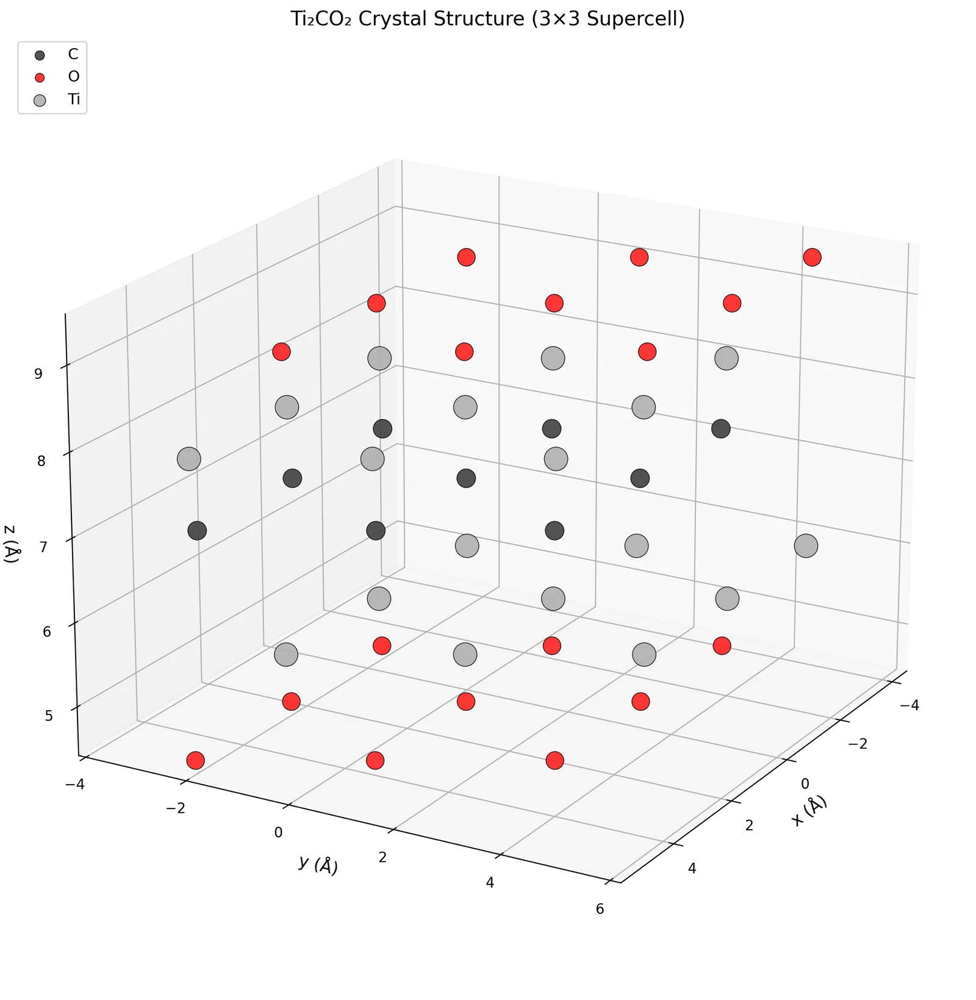
From the thesis text
The CGCNN model takes the full crystal structure (Figure 3.2) as input without any hand-crafted descriptors [79].
thesis p. 29
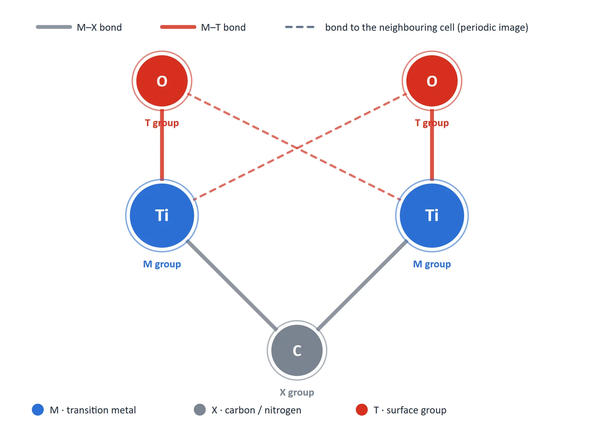
From the thesis text
The graph representation is a data format that preserves the topological information of the crystal and can be processed directly by GNN models. Unlike conventional tabular descriptors, it naturally encodes the bonding patterns between atoms, their neighborhood relations and their spatial context; the node colors in Figure 3.3 reflect the output of the atom-group identification algorithm described below.
thesis p. 30
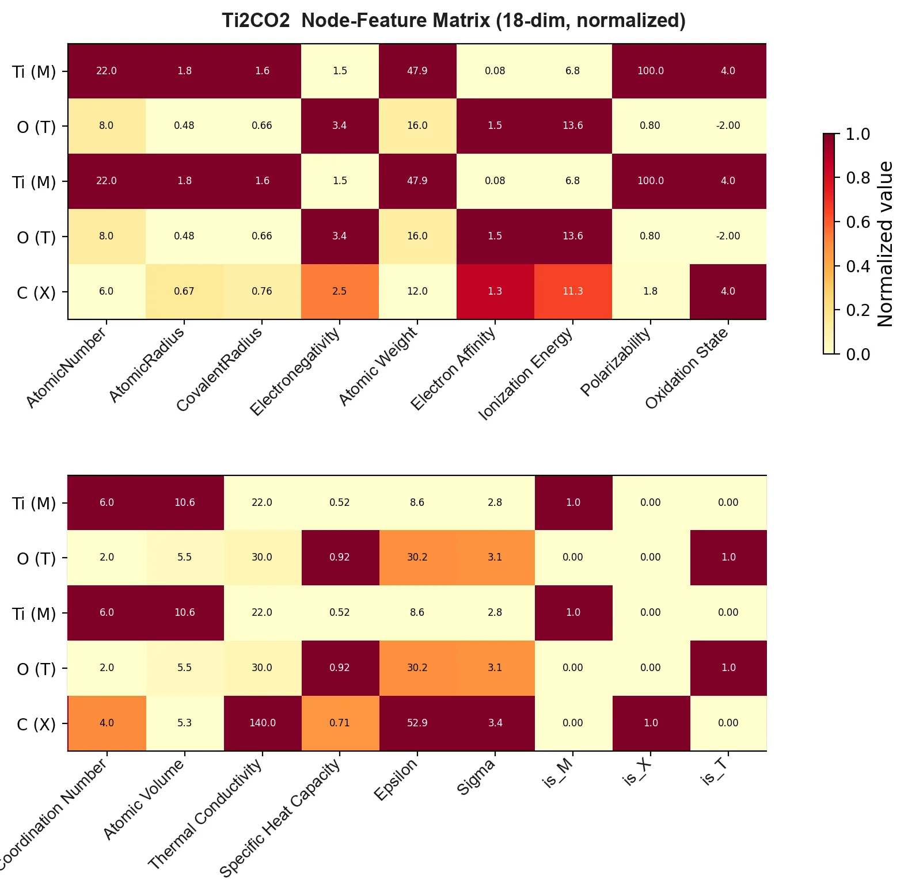
From the thesis text
The block patterns observed in the node-feature heat-map of Figure 3.4 show that the different atom groups possess clearly distinguishable feature profiles: the M-group atoms (transition metals) are characterized by high atomic weights and intermediate electronegativities, whereas the T-group atoms (functional groups) stand out through high electronegativity and small covalent radii. The one-hot columns (the last three dimensions) state the group membership of each atom unambiguously. This separation allows the GNN to distinguish the information arriving from different atom types during message passing and to learn group-specific patterns.
thesis p. 31
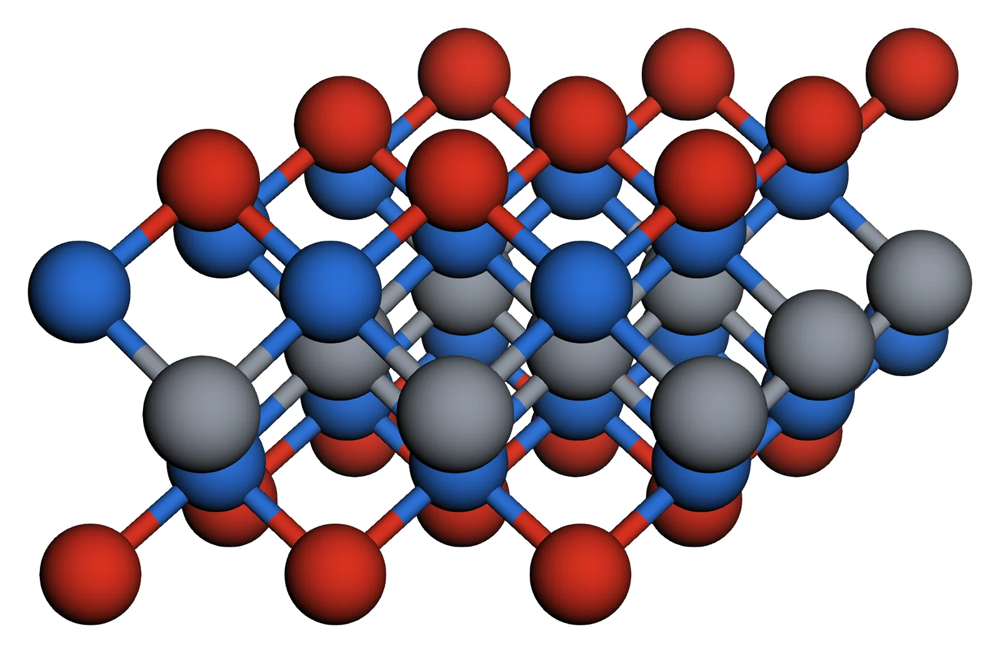
From the thesis text
… Dedicated hydrogen-bond distance criteria were implemented for the detection of the -(NH2)2 and -(OH)2 terminations, and the bond-calculation module operates with the periodic boundary conditions appropriate to the layered 2D geometry. As Figure 3.5 demonstrates, the algorithm assigns every atom of the structure to the correct group automatically. This is a prerequisite for the groupspecific statistics (e.g. the mean electronegativity of the M group or the maximum atomic weight of the T group) on which the feature engineering rests.
thesis p. 32
Read more from the thesis
The thesis describes this step as the structure-to-descriptor pipeline of Section 3.2 (thesis pp. 28–35); the name MX-Identifier was given after the thesis. The 97 descriptors fall into six main categories (thesis pp. 28–29, Table 3.2). An atom-group identification algorithm classifies every atom of a structure as a transition metal (M), carbon/nitrogen (X) or functional group (T) automatically (thesis pp. 32–33, Figure 3.5). Bonds are detected from covalent radii, periodic in the sheet plane, and each edge of the crystal graph is an M–X or M–T bond (thesis pp. 30–31). The only input is the CIF: no manually provided quantity is required, and the same pipeline produces the 97 tabular descriptors and the crystal-graph representation fully automatically (thesis pp. 34–35).
Numbers in this section
- 97 descriptors per structure reported · thesis p. 28, Table 3.2
- six descriptor categories reported · thesis pp. 28–29
- 4 models start from the same description (Random Forest · XGBoost · LightGBM · CGCNN).
Hybrid ML Surrogates: Two-Stage Scheme
Every surrogate uses the same two-stage hybrid scheme: a classifier first separates adsorbers from non-adsorbers, then a regressor trained on adsorbers only predicts the six uptakes. Three tree-based models (Random Forest, XGBoost, LightGBM) read the 97-descriptor fingerprint and are compared with one another; a graph model (CGCNN)[6] reads the crystal graph and is compared against all three. Data split: 15,298 structures for training, 1,700 for testing and a held-out set of 1,886 that no model saw.
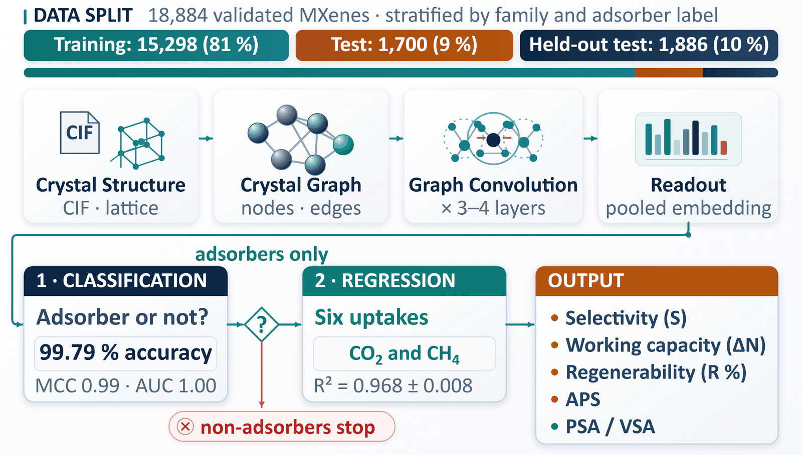
This interactive illustration needs JavaScript.
More analyses2 figures
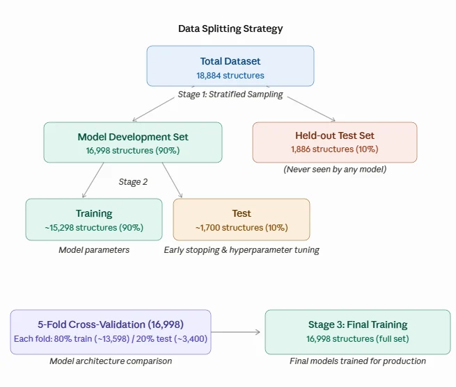
From the thesis text
The comprehensive data-splitting workflow designed to ensure robust model evaluation and eliminate data leakage is systematically illustrated in Figure 3.1. The strategy is executed in three distinct phases: first, partitioning the global dataset into independent development and production-testing pools (Stage 1); second, optimizing model hyperparameters via an internal hold-out split (Stage 2); and finally, validating generalizability across architectures using 5-fold cross-validation before executing final production training (Stage 3). …
thesis p. 26
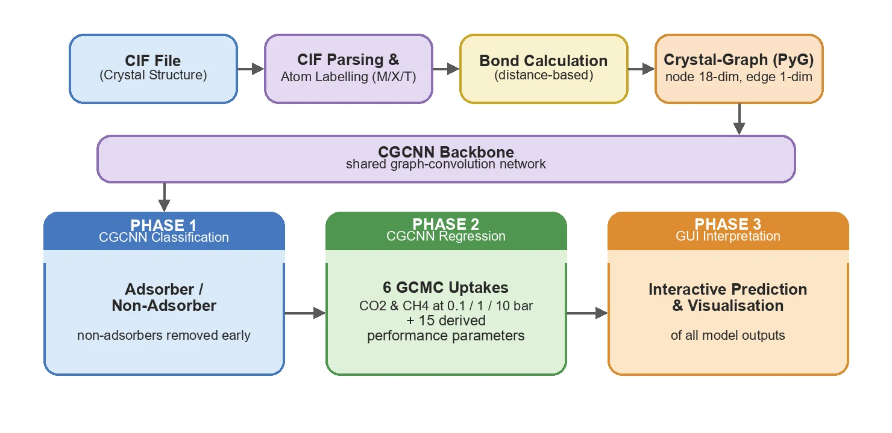
From the thesis text
The most important design decision of the cascaded architecture is that each stage consumes the output of the preceding one. This brings two principal advantages: (i) the classification stage eliminates the non-adsorber structures early, so that the regression model operates only on physically meaningful samples; and (ii) the six uptake values predicted by the regression stage are propagated forward into the analytical computation of the derived performance parameters and into the graphical interface, enriching the information available downstream. The arrows in Figure 3.6 represent precisely this sequential flow of information.
thesis p. 35
Read more from the thesis
About 15 % of structures adsorb essentially nothing; feeding them to a regressor degrades it, so a gate classifier is applied first (thesis p. 34: 15.5 % non-adsorbers, CH4 < 0.01 mol/kg at 10 bar). The regressor predicts CO2 and CH4 uptakes at three pressures in one pass (thesis p. 36). CGCNN follows the original architecture of Xie and Grossman, with atoms as nodes and bonds as edges (thesis p. 33). The tree and boosting models use 97 descriptors (thesis p. 28). The data were split in three stages, stratified by family and adsorber label: a development set for training and testing and a held-out set of 1,886 structures that no model saw (thesis p. 27, Figure 3.1).
Numbers in this section
- 6 uptakes (3 pressures × 2 gases)
- 97 descriptors
- 15,298 training · 1,700 test · 1,886 held-out reported · thesis p. 27
- 15.5 % non-adsorbers reported · thesis p. 34.
Model Performance & Screening Interface
| Model | Classification · Acc. | Classification · MCC | Classification · AUC | Regression R² · CO2 | Regression R² · CH4 | Regression R² · Mean ± σ |
|---|---|---|---|---|---|---|
| CGCNN | 0.9979 | 0.9919 | 1.0000 | 0.951 | 0.986 | 0.968 ± 0.008 |
| XGBoost | 0.9958 | 0.9841 | 1.0000 | 0.935 | 0.987 | 0.961 ± 0.014 |
| LightGBM | 0.9963 | 0.9858 | 0.9999 | 0.935 | 0.987 | 0.961 ± 0.013 |
| Random Forest | 0.9947 | 0.9802 | 0.9998 | 0.877 | 0.978 | 0.927 ± 0.018 |
Classification: single-split test (1,886 held-out). Regression R²: 5-fold CV, mean over 0.1, 1 and 10 bar ± s.d. across folds. MCC = Matthews correlation, AUC = ROC area.
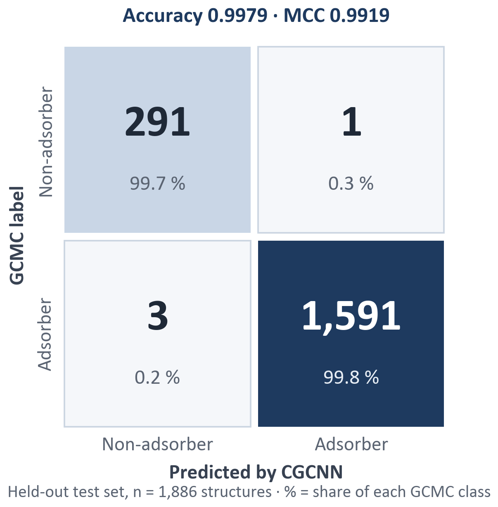
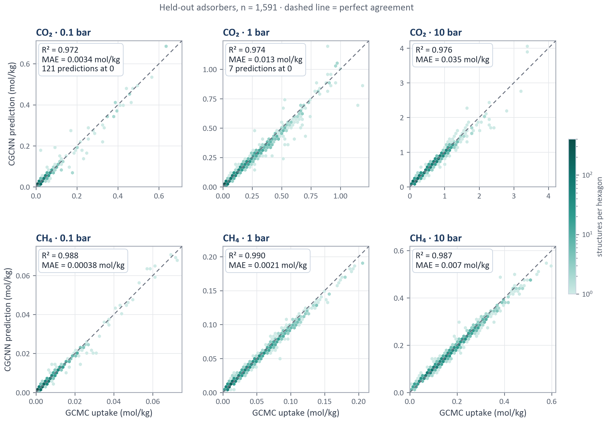
Held-out set: 1 false positive, 3 false negatives; six uptakes R² = 0.972–0.990. Held-out and 5-fold CV are two separate protocols.
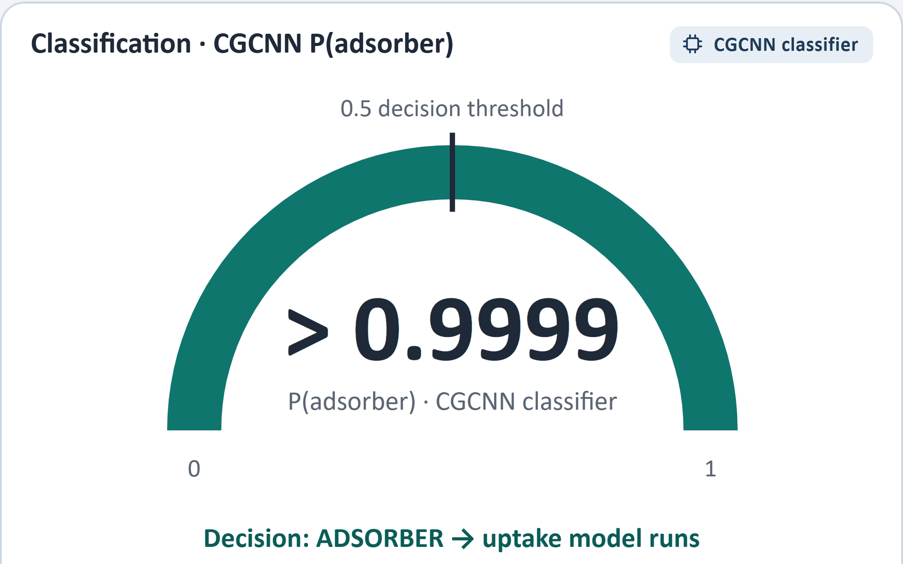
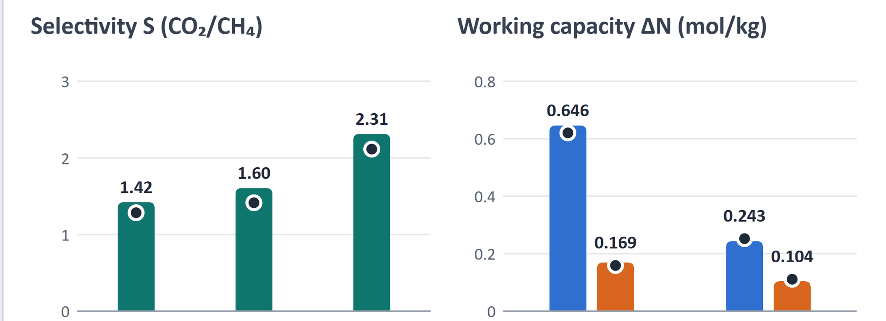
PSAVSAGCMC (thesis data)
Speed-up: one GCMC simulation's wall time ÷ the full 1.18 s analysis (est.).
Playback is paced to the measured batch average of the thesis models; results are precomputed, no model runs in the browser. The 20 structures come from the held-out test set: the structure shown on the poster plus 19 drawn at random within each family, not chosen for prediction quality.
More analyses16 figures
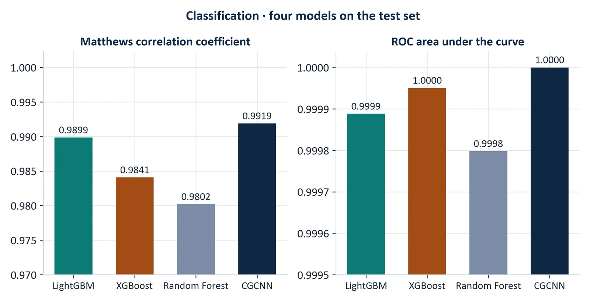
From the thesis text
Figure 4.19 compares the MCC and AUC-ROC of the four models; CGCNN's superiority on both metrics reflects the ability of graph neural networks to capture crystal-structure information at the topological level, while the competitive results of LightGBM, XGBoost and Random Forest confirm the effectiveness of the 97 domaininformed tabular features.
thesis p. 67
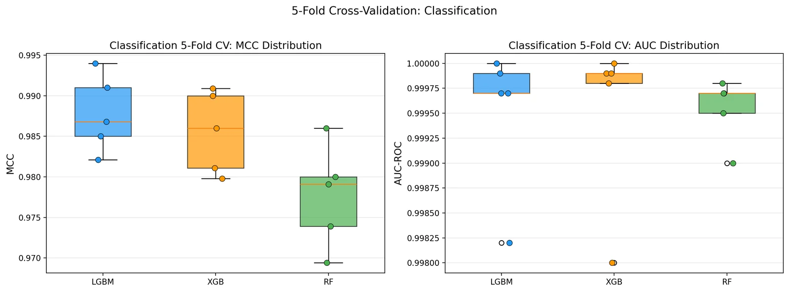
From the thesis text
Figure 4.20 visualizes the MCC distribution of each model across the five folds; narrow boxes and short whiskers indicate low variance, the centered median lines reveal a symmetric performance distribution, and the absence of outliers confirms that no fold suffers a significant performance drop.
thesis p. 67
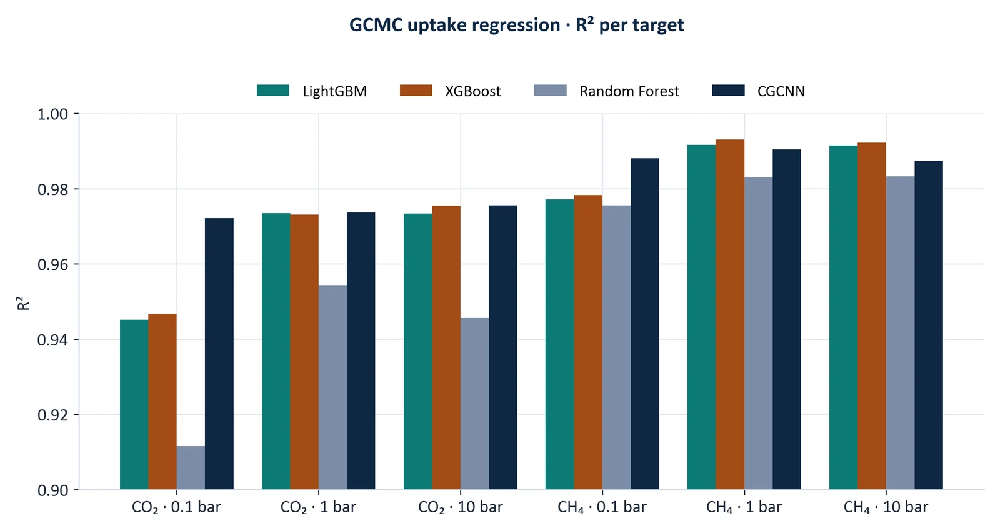
From the thesis text
Figure 4.21 compares the R2 distribution of the four models across the six targets; CGCNN's consistent superiority on all targets demonstrates that the graph-convolution architecture models the structure–adsorption relationship more effectively, while the marginal advantage of XGBoost and LightGBM over Random Forest among treebased models implies that gradient boosting is better suited to this task.
thesis p. 68
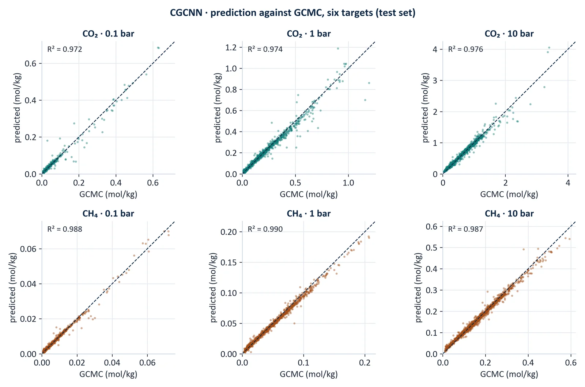
From the thesis text
The scatter plots in Figure 4.22 show that the CGCNN predictions agree closely with the ground truth; the symmetric distribution of points about the diagonal indicates the absence of any systematic bias, while the slight increase in scatter at high uptake (heteroscedasticity) originates from the magnification associated with inverting the log-transform.
thesis p. 69
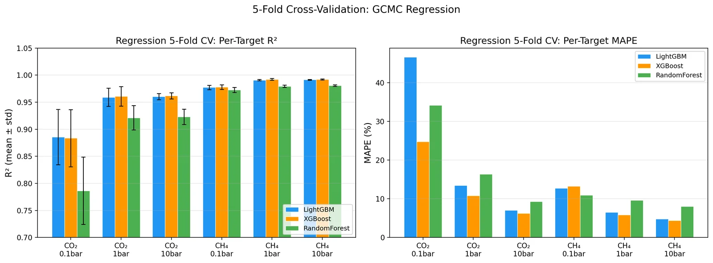
From the thesis text
The box plot in Figure 4.23 confirms that the GCMC regression models maintain high and consistent R2 values across the 5-fold cross-validation; the symmetric position of the medians within the boxes and the narrow interquartile range (IQR) show that the models learn similar patterns across different train-test splits [184]. This stability is particularly important because the GCMC regression outputs are used as inputs for computing the derived performance parameters in the cascaded architecture and in the end-user interface, so their low variance underpins the reliability of all downstream predictions.
thesis p. 70
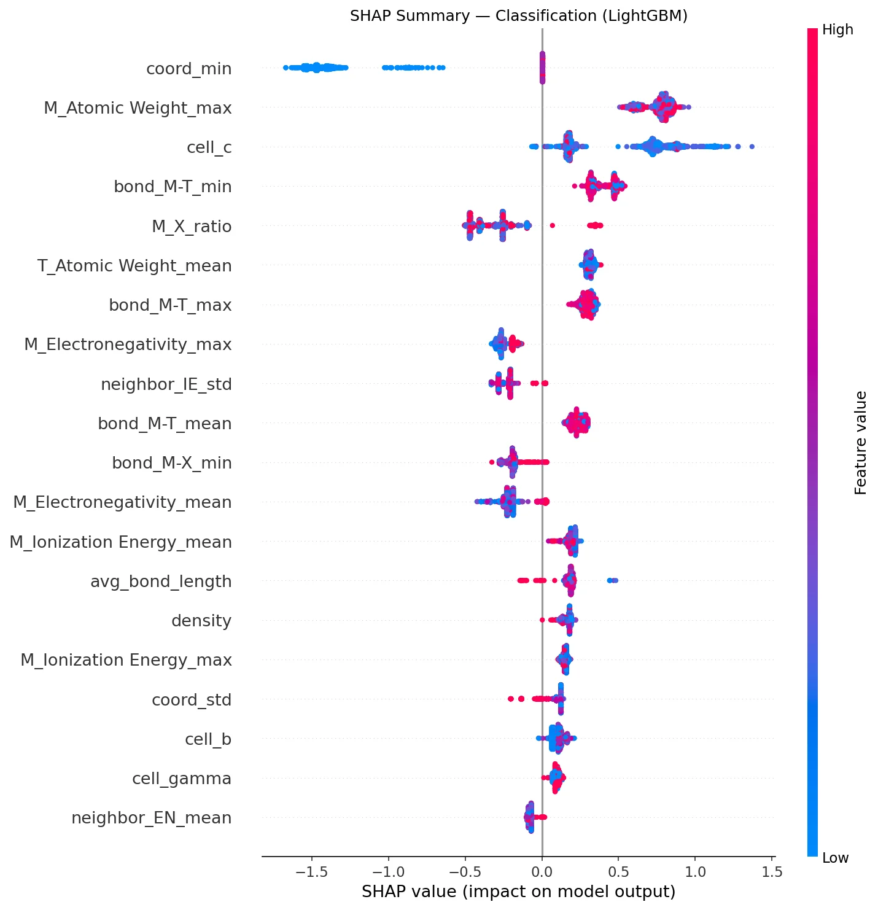
From the thesis text
In the SHAP beeswarm of Figure 4.26, high values of T-group electronegativity produce positive SHAP contributions (towards 'adsorber'), in agreement with the physical expectation that highly electronegative terminations (–F2, –O2, –Cl2) enhance gas adsorption; the strong overlap between the correlation-based and SHAP-based feature rankings supports the model's interpretability [98].
thesis p. 76
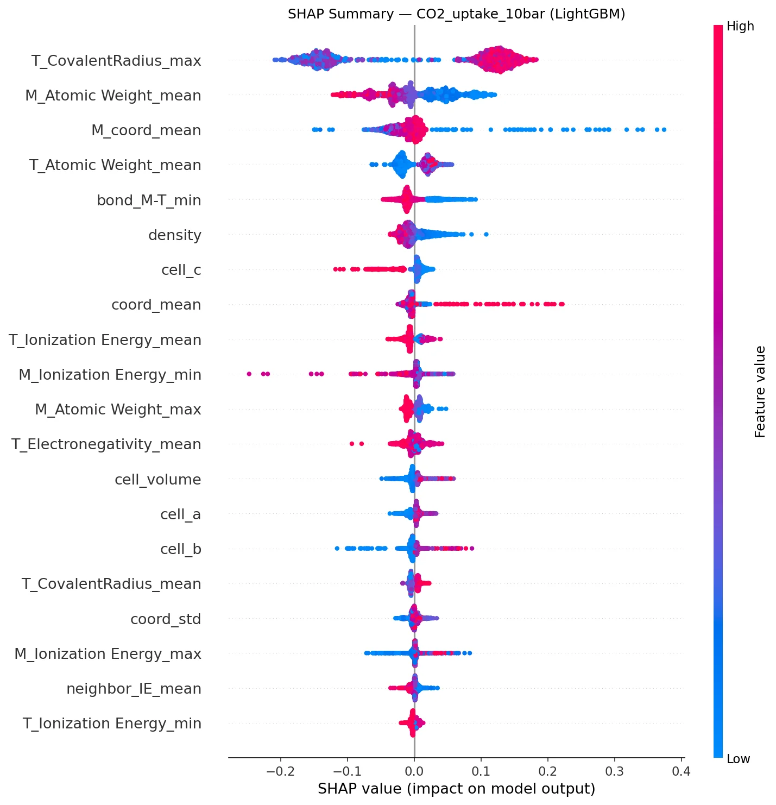
From the thesis text
The GCMC regression SHAP analysis in Figure 4.27 reveals that the descriptors driving uptake may differ from those controlling the classification target; the prominence of unit-cell volume is consistent with the expectation that larger cavities host more gas molecules, indicating that the regression task answers 'how much is adsorbed' through a different set of features [98].
thesis p. 77
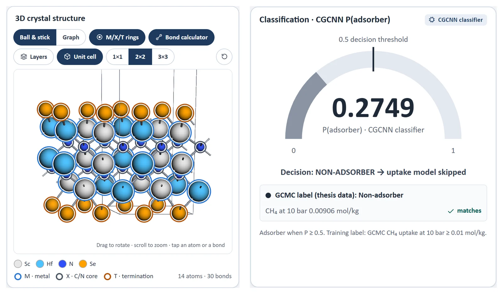
From the thesis text
In the single-structure mode, the three-dimensional interactive visualization, the crystallographic information, the classification result and the GCMC adsorption predictions of the selected structure are presented in separate tabs; the corresponding screens are shown for a non-adsorber structure in Figure 4.31, and the crystal-structure information tab, listing the functional groups, the lattice parameters, the unit-cell volume and all computed descriptors, in Figure 4.32.
thesis p. 79
These single-analysis screenshots document the complete analysis chain offered by the interface step by step, from structure selection (Figure 4.29) through 3D visualization (Figures 4.30 and 4.31) and the crystal-structure information tab (Figure 4.32) to the classification verdict and the GCMC uptake values (Figures 4.35 and 4.36).
thesis p. 79
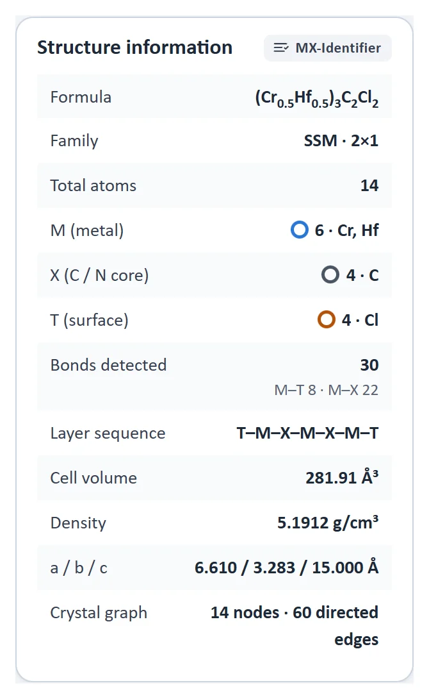
From the thesis text
The interface lets the user select one of the 1,886 structures in the validation dataset [the held-out test set] or upload a custom CIF file (Figure 4.29); the selected structure is rendered in three dimensions by an interactive py3Dmol-based viewer (Figure 4.30), and all computed descriptors such as the functional groups, lattice parameters and unit-cell volume are listed in a separate tab (Figure 4.32).
thesis p. 79
In the single-structure mode, the three-dimensional interactive visualization, the crystallographic information, the classification result and the GCMC adsorption predictions of the selected structure are presented in separate tabs; the corresponding screens are shown for a non-adsorber structure in Figure 4.31, and the crystal-structure information tab, listing the functional groups, the lattice parameters, the unit-cell volume and all computed descriptors, in Figure 4.32.
thesis p. 79
These single-analysis screenshots document the complete analysis chain offered by the interface step by step, from structure selection (Figure 4.29) through 3D visualization (Figures 4.30 and 4.31) and the crystal-structure information tab (Figure 4.32) to the classification verdict and the GCMC uptake values (Figures 4.35 and 4.36).
thesis p. 79
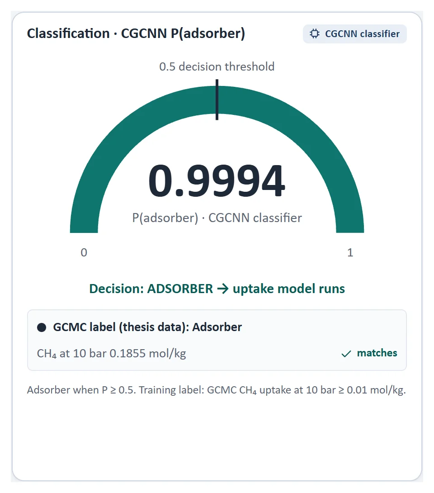
From the thesis text
Presenting separate screens for an adsorber and a non-adsorber structure demonstrates that the model produces meaningful outputs for both classes, and the gauge component on the classification screen visualizes the adsorber probability computed by the CGCNN intuitively, allowing the user to judge the confidence of the model at a glance (Figures 4.33 and 4.34).
thesis p. 79
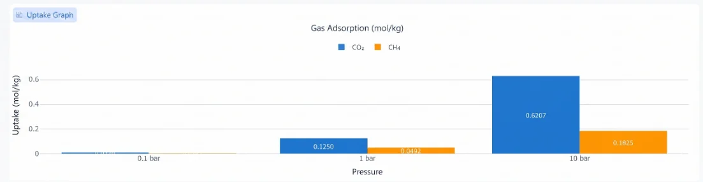
From the thesis text
These single-analysis screenshots document the complete analysis chain offered by the interface step by step, from structure selection (Figure 4.29) through 3D visualization (Figures 4.30 and 4.31) and the crystal-structure information tab (Figure 4.32) to the classification verdict and the GCMC uptake values (Figures 4.35 and 4.36).
thesis p. 79
When a structure is classified as an adsorber, the CGCNN regressor predicts the six GCMC targets (CO2 and CH4 uptake at 0.1, 1 and 10 bar) and these values are presented as a bar chart grouped by pressure condition (Figure 4.35). From the predicted uptake values, derived parameters such as the CO2/CH4 selectivity, working capacity, Henry constant and separation performance score are computed automatically and summarized in a dedicated panel (Figure 4.36), so that the user can assess all industrially meaningful metrics for a single structure at a glance.
thesis p. 83
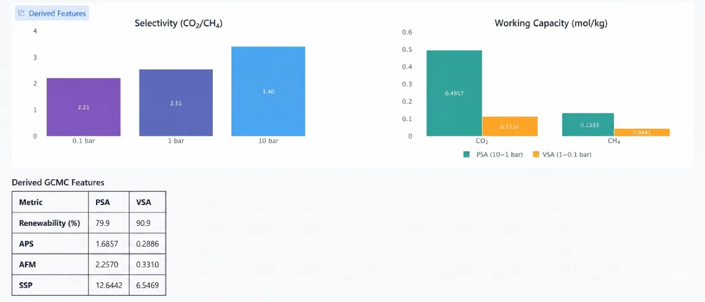
From the thesis text
These single-analysis screenshots document the complete analysis chain offered by the interface step by step, from structure selection (Figure 4.29) through 3D visualization (Figures 4.30 and 4.31) and the crystal-structure information tab (Figure 4.32) to the classification verdict and the GCMC uptake values (Figures 4.35 and 4.36).
thesis p. 79
When a structure is classified as an adsorber, the CGCNN regressor predicts the six GCMC targets (CO2 and CH4 uptake at 0.1, 1 and 10 bar) and these values are presented as a bar chart grouped by pressure condition (Figure 4.35). From the predicted uptake values, derived parameters such as the CO2/CH4 selectivity, working capacity, Henry constant and separation performance score are computed automatically and summarized in a dedicated panel (Figure 4.36), so that the user can assess all industrially meaningful metrics for a single structure at a glance.
thesis p. 83
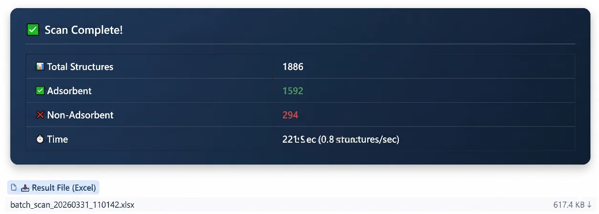
From the thesis text
The batch-screening screenshots illustrate the three stages of the high-throughput workflow: launch, live monitoring and result summary (Figures 4.37, 4.38 and 4.39).
thesis p. 84
In the high-throughput batch-screening module, the user can analyze all structures at once by selecting a folder containing CIF files (Figure 4.37); a live-monitoring screen shows the instantaneous progress bar, the number of structures analyzed and the estimated time remaining (Figure 4.38), and the results are exported as an Excel file (Figure 4.39).All 1,886 structures in the validation dataset [the held-out test set] were analyzed by the batch module in about 2,220 seconds (~0.8 structures/s); compared with the hours-per-structure cost of conventional GCMC simulations, this throughput clearly demonstrates the practical screening power of the developed software pipeline.
thesis p. 85
From the thesis text
The batch-screening module of the interface produced results consistent with the offline evaluation; on the 1,886 held-out test structures the CGCNN classifier reached 99.79% accuracy and the dominance of the diagonal cells (true positives and true negatives) in the confusion matrix shows that the model discriminates both classes reliably (Figure 4.40).
thesis p. 86
The quantitative reliability of the predictions produced by the developed interface was further validated on the 1,886 structures of the held-out test set through the batchscreening module. On the classification side the interface operated, consistently with the offline evaluation, at 99.79% accuracy with only a single false positive out of 1,886 structures, thereby demonstrating that the deployed model preserves its laboratory performance (Table 4.8, Figure 4.40).
thesis p. 88
From the thesis text
In the scatter plots comparing the GUI predictions with the GCMC simulation results for the six target variables, the clustering of points near the diagonal confirms that the online prediction pipeline preserves the same accuracy as the offline model (Figure 4.41). The relative-error (%) histograms computed for each target variable concentrate around zero, indicating that there is no systematic bias in the GUI pipeline and that the error is largely random (Figure 4.42).
thesis p. 87
From the thesis text
In the scatter plots comparing the GUI predictions with the GCMC simulation results for the six target variables, the clustering of points near the diagonal confirms that the online prediction pipeline preserves the same accuracy as the offline model (Figure 4.41). The relative-error (%) histograms computed for each target variable concentrate around zero, indicating that there is no systematic bias in the GUI pipeline and that the error is largely random (Figure 4.42).
thesis p. 87
Read more from the thesis
Models were evaluated on a stratified held-out test set of 1,886 structures never seen during training (thesis p. 25). The CGCNN classifier reaches 0.9979 accuracy; in the table, the CO2 and CH4 columns average the three pressures, and the overall 0.968 ± 0.008 averages all six targets (thesis p. 68, Table 4.4). Boosting (XGBoost, LightGBM) follows closely, showing the hybrid scheme — not a single algorithm — is the main driver of accuracy (thesis p. 68). The thesis Gradio tool labels atoms, builds the crystal graph and returns the prediction in about one second on a CPU (thesis p. 86, p. 91); its 1,886-structure held-out batch ran in 37 minutes on one 128-thread AMD EPYC 7763, which is where the 1.18 s per structure comes from. The two speed-up figures are estimates: one GCMC simulation's wall time, and the three simulations of one structure, each divided by the same 1.18 s analysis. The interface on this page replays the same models' results on 20 held-out structures; it is not the thesis tool.
Numbers in this section
- 1,886 held-out
- 99.79 % accuracy
- 1 FP / 3 FN
- R² = 0.968 ± 0.008 (CGCNN, 5-fold CV mean)
- R² = 0.972–0.990, six uptakes, held-out
- 1.18 s per structure derived · 2,219.9 s / 1,886
- ≈ 37,000× faster than one GCMC simulation estimate
- ≈ 110,000× faster than 3 simulations per structure estimate.
Conclusions: Integrated Screening Ecosystem
- MXenes are among the most promising adsorbents: at high regenerability the top ones match or exceed the best MOFs[5].
- An automated, distributed, crystal-aware ecosystem: MEM-CES Studio 3.0 distributes GCMC across computers, and MX-Identifier can extend to other crystals for screening and feature engineering.
- From years to minutes: about 3 years of hands-on work removed; a 64-core CPU needs about 1.2 years for the 56,652 simulations, the surrogates about 6 min (est.).
- Future directions: ML for structure generation and an end-to-end pipeline; transfer learning for other gas pairs with less data; generative AI to find the best MXene per gas pair in larger spaces.
Read more from the thesis
Future work includes relaxing each structure with machine-learned interatomic potentials and predicting the DFT partial charges with a second network trained on them (thesis p. 92). The library is not yet released; it is planned as an open resource (thesis p. 90).
Numbers in this section
- about 3 years of hands-on work removed estimate · author
- about 1.2 years on a 64-core CPU for the 56,652 simulations estimate
- about 6 min for the surrogates estimate.
References
- Ahmed, B., et al., 2020. Adv. Funct. Mater., 30(47), 2000894 (MXene families).
- Dubbeldam, D., et al., 2016. Molecular Simulation, 42(2), 81-101.
- Rappé, A. K., et al., 1992. JACS, 114(25), 10024-10035 (UFF).
- Potoff, J. J., Siepmann, J. I., 2001. AIChE Journal, 47(7), 1676-1682 (TraPPE).
- Altintas, C., et al., 2018. ACS Appl. Mater. Interfaces, 10(20), 17257-17268 (3,816 MOFs).
- Xie, T., Grossman, J. C., 2018. Physical Review Letters, 120(14), 145301 (CGCNN).
Contact & questions
- Contact: eyazkan@gtu.edu.tr (Eyüp Yazkan) · sadiye.velioglu@itu.edu.tr (Sadiye Velioğlu)